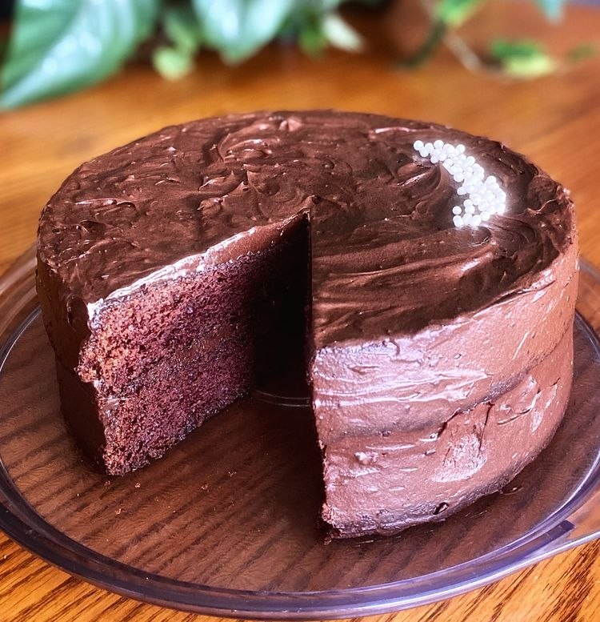

Double Chocolate Cake

Description
Who doesn't love chocolate cake? Well this one has 2 layers!
Combine that with a chocolate ganache and we're in heaven
Ingredients
- 3/4 cup butter
- 2 (1oz) squares unsweetened baking chocolate, chopped
- 2 1/4cups all-purpose flour
- 2 cups white sugar
- 1/4 cup unsweetened cocoa powder
- 2 teaspoons baking soda
- 1 teaspoon salt
- 1 3/4cups buttermilk
- 2 eggs, room temperature
- 3/4 cup whipping cream
- 1 1/2cups semisweet chocolate chips
Directions
- Step 1:
Preheat the oven to 350 degrees F (175 degrees C).
Grease two 9-inch round cake pans.
- Step 2:
Place butter and unsweetened chocolate in the top of a double boiler over simmering water.
Stir frequently, scraping down the sides with a rubber spatula to avoid scorching, until melted, about 5 minutes.
- Step 3:
Combine flour, sugar, cocoa, baking soda, and salt in a large bowl using an electric mixer.
- Step 4:
Combine buttermilk and eggs in another bowl and add melted chocolate mixture.
Beat into flour mixture on low speed for 1 minute; increase speed to high and beat until light and fluffy, about 2 minutes.
Divide batter between the prepared cake pans.
- Step 5:
Bake in the preheated oven until the cake springs back when lightly pressed, 25 to 30 minutes.
Set aside and let cool.
- Step 6:
Meanwhile, bring cream to a boil in a saucepan over medium-high heat.
Immediately remove from heat and stir in chocolate chips until it thickens and is smooth.
Allow to cool slightly, about 10 minutes.
- Step 7:
Place one cooled cake layer on a cake plate and spread with a layer of ganache frosting.
Lay the second layer on top and use remaining ganache frosting to cover the top and sides of the cake.
Cooks Note:
If you don't let the ganache cool, when it's spread over the cake it will be too runny and will just get absorbed instead of sitting on top of the cake as frosting.